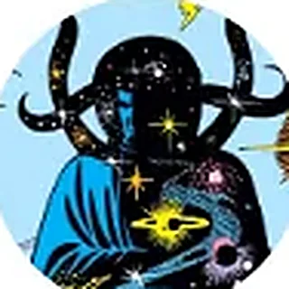

Encyclopédie › Entités abstraites
Entités abstraites
Éternité
le temps et l’existence
Interprétation7 relations
Présentation
Incarnation de l’univers vivant. Enchaîné par Ordre Suprême et Seigneur Chaos, puis libéré par les Ultimates.
Où le lire
- Strange Tales #138 (1965)
- Ultimates²
Relations

Amour
Entités abstraites · l’attraction universelle

Entropie
Entités abstraites · l’usure de toute chose

Eon
Entités abstraites · le gardien du temps cosmique

Epoch
Entités abstraites · la gardienne du cosmos

Éternité
Entités abstraites · Naissance · Bien · Science

Kronos
Entités abstraites · le Titan devenu le Temps
Les Manifestations
Lieux et dimensions · les Infinis